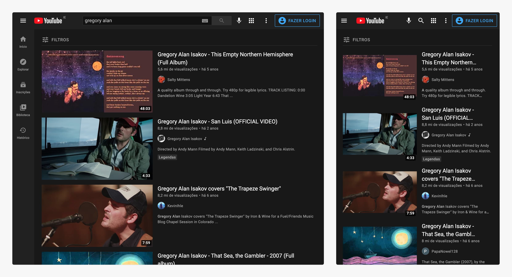
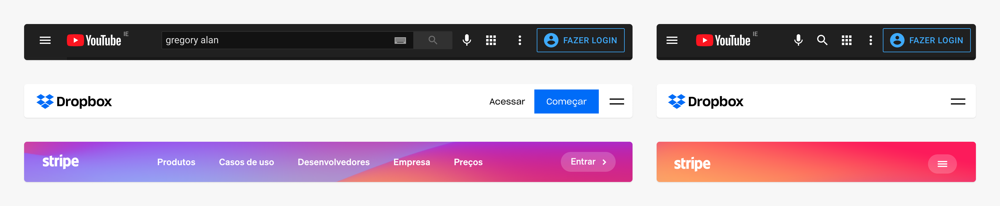

Interfaces Digitais
Design Responsivo
Interfaces Responsivas
Se adapta ao meio
Tamanho da tela (pequena, média e grande), tipo da tela (touch ou não).
Único Artefato
Ao invés de ter um site para cada meio, ter um único site que se adapta.
Acessibilidade
Web para todos.
O YouTube esconde os itens do menu principal atrás do menu "hamburguer".

O Dropbox remove a visibilidade inicial do formulário de registro.
Boas Práticas
Mantenha as Funcionalidades
Não assuma as necessidades do seu usuário.
Simplifique/Remova Ilustrações
Ilustrações ou elementos decorativos que ocuparem boa parte da tela, podem ser removidos em telas menores.
Simplifique a Interface
Esconda opções do menu, diminua o total de itens mostrados.
Touch
O dedo não é tão preciso quanto o ponteiro do mouse.
Navegação
O uso do menu mobile (hambúrguer), é uma forma de escondermos as opções de navegação através de um botão que mostra e esconde as mesmas.

Listas e Conteúdo
Simplificar
Remover imagens, ornamentos e a quantidade de itens mostrados.
Recompor
3 itens em 3 colunas, se tornam 3 itens em uma coluna, um abaixo do outro.
Slides Horizontais
Usados para apresentar listas de itens (funcionam ao arrastarmos o dedo).